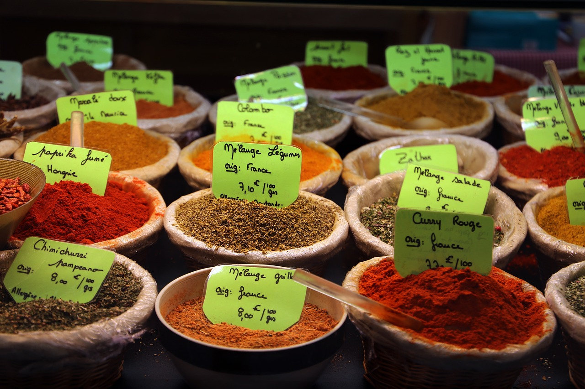

About MERDAH
Mercy Corps’ Middle East Regional Data Analysis Hub (MERDAH) is intended to be a platform to analyze and download quantitative indicators developed by Middle East country level Crisis Analytics teams. The quantitative indicators are useful for one or a combination of advocacy, targeting, and operational utility. The modules are regionally cross-cutting by theme or approach; for example, regional GDP (theme) and market price predictions (approach).
Individual modules are found on the country-specific tabs within the dashboard. All indicators are available for download in CSV or Excel format. Currently, price predictions are available for Lebanon, Syria, Iraq, Yemen, and Palestine; further regional GDP estimates are available for Syria.
Price Forecasts

Seven-month price predictions are generated for Lebanon, Syria, Iraq, Yemen, and Palestine by the zone of control (where applicable) or administrative-1 or equivalent division. The predictions are data-driven, meaning past price data is used to predict future prices. Predictions are indicated by the dotted lines on the line graphs in each module named “Prices” found in all country tabs. Price dynamics over the past three, six, and nine months are also found in each country tab. The Lebanon tab also included predictions of the Consumer Price Index, which is frequently used to understand market price trends among aid actors in Lebanon.
All market price data was collected by WFP and freely downloaded from the Humanitarian Data Exchange:
The predictions are generated using an approach called model chaining, which essentially uses the results from one or more predictive models as input data (independent variables) in other predictive models. The measures of prediction accuracy indicate the predictions are (on average) within 1% of the observed value. A full explanation of the methodology and accuracy assessment can be found in the associated methodology document.
Regional GDP Estimates
Regional (subnational) GDP estimates are useful indicators to direct early recovery and redevelopment efforts but are unavailable for countries in the Middle East. Given that night lights reflectance data obtained from satellite images is a proven proxy for economic development, these data are able to be used to estimate GDP.
Largely following a methodology established by the IMF and Mercy Corps’ CA-Syria team, Mercy Corps Crisis Analytics disaggregated national GDP into subnational units and estimated the local GDP using night lights reflectance data. The regional estimates are currently only available for Syria but will also be eventually generated for Yemen and Iraq. The regional GDP estimates can currently be found in the “GDP” tab on the Syria country tab, along with graphs of governorate-level time trends.